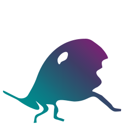

Walter Schulze awalterschulze @ gmail Talks Videos Projects Katydid: validation language for serialized data  gogoprotobuf, erlfmt, goderive, gographviz, music generation Music PostPost om te neurie Few and Far Between Learnings more...

 Videos
Videos